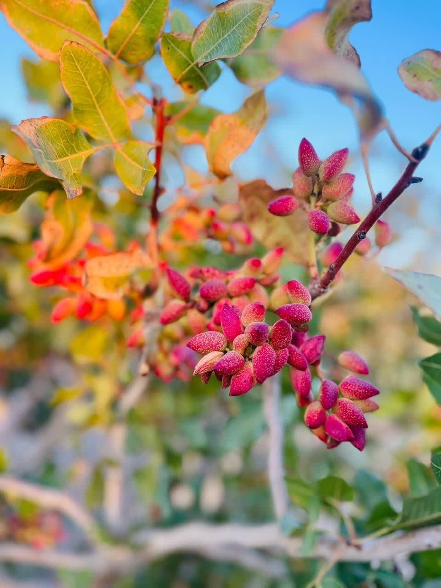
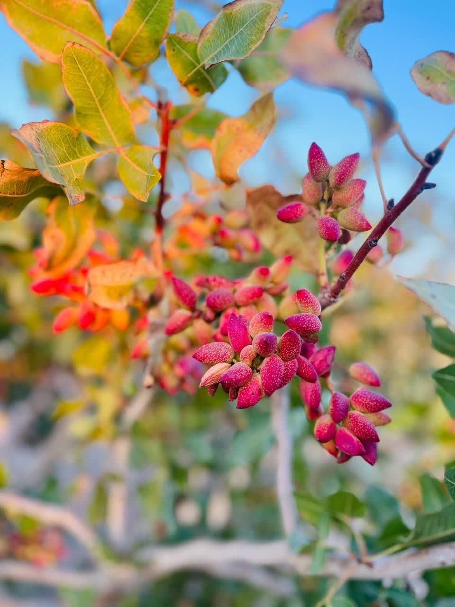

بررسی خواص پسته؛ نشان میدهد که این خشکبار آثار چشمگیری در کاهش وزن دارد. قسمت زیادی از چربی پسته در دیواره سلولی بافت آن ذخیره میشود که امکان جذب آن در روده وجود ندارد. این یکی از عواملی است که پسته را برای کاهش وزن مناسب میکند؛ چرا که چربیهای موجود در پسته به طور کامل جذب نمیشوند. ذکر این نکته هم خالی از لطف نیست که کندن پوست پسته هنگام خوردن آن به خاطر زمان بر بودن موجب میشود که 41 درصد کمتر از خوردن مغز پسته پوست کنده کالری دریافت کنید. از جمله خاصیت پسته؛ این است که حاوی مقادیر قابل توجه ای از فیبر بوده که این ماده ی غذایی برای باکتریهای روده مفید واقع می گردد. پس از تجزیه ی فیبر موجود در پسته، پروبیوتیکها آنها را به اسیدهای چرب با زنجیره کوتاه مانند بوتیرات تبدیل میکنند که فواید متعددی از جمله کاهش خطر ابتلا به مشکلات گوارشی، سرطان و بیماریهای قلبی دارد.در بیان خواص پسته؛ به موضوع بیماری های قلبی اشاره شد. در ادامه اما خاصیت پسته، در زمینه کاهش کلسترول به عنوان یک چربی مضر برای بدن مورد اشاره قرار میگیرد. پسته میتواند از شیوههای مختلفی خطر ابتلا به بیماریهای قلبی را کاهش دهد. یکی از این شیوهها تاثیر مثبت آنتی اکسیدانهای موجود در پسته در کاهش کلسترول خون و نیز تنظیم فشار خون است. یک نوید ارزنده برای مبتلایان به فشار خون بالا این است که پسته علاوه بر کاهش کلسترول باعث کاهش فشار خون نیز میشود. نتایج 21 مطالعه در مورد تأثیر این میوه در کاهش فشار خون، نشان میدهد که مصرف آن باعث کاهش 1.82 میلی متر جیوه از حد بالایی فشار خون و 0.8 میلی متر جیوه از حد پایین فشار خون میشود.
قیمت پسته درجه یک با توجه به نوع، بازار و کیفیت پسته متفاوت می باشد. برای مثال خرید پسته اکبری و احمد آقایی نسبت به سایر پسته ها دارای قیمت بیشتری می باشند؛ زیرا ظاهر زیبا و لوکسی دارند و سطح کشت و محصول آن ها محدود می باشد. در خرید پسته برای پذیرایی، سوغات یا مصرف روزمره، میتوان انواع مختلفی را انتخاب نمود. همین مساله، تاثیر بسزایی بر قیمت پسته دارد. بنابراین، بهتر است قبل از اقدام برای خرید، هدف خود را مشخص کنید. معمولا پستههای لوکس مانند پسته اکبری و پسته آقایی، گزینههای بهتری برای سوغات هستند. در حالی که، پسته فندقی با قیمت مناسبتر، جهت مصرف روزمره با صرفهتر خواهد بود.
پس از خرید پسته درجه یک، برای نگهداری باید آن را در ظروف عایق هوا و رطوبت نگه داشت. پسته در دمای اتاق تا چند هفته قابل استفاده است اما اگر آن را در یخچال نگهداری کنید، می توانید آن را تا چند ماه استفاده کنید. بهترین محل برای نگهداری و سالم ماندن پسته، فریزر است که سبب می شود تا حدود یک سال، سالم و قابل استفاده باشد. انواع پسته، صرف نظر از نوع و کیفیت آنها، باید در محیط خشک و خنک نگهداری شوند. توجه به شرایط نگهداری این محصول، در حفظ کیفیت آن تاثیرگذار است. اگر حجم بالایی از پسته را خریداری میکنید، این مساله اهمیت بیشتری پیدا میکند.
کیفیت تضمینی
ارسال سریع
تازهترین محصولات
 
